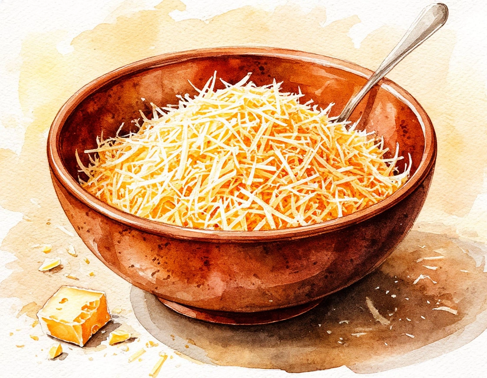
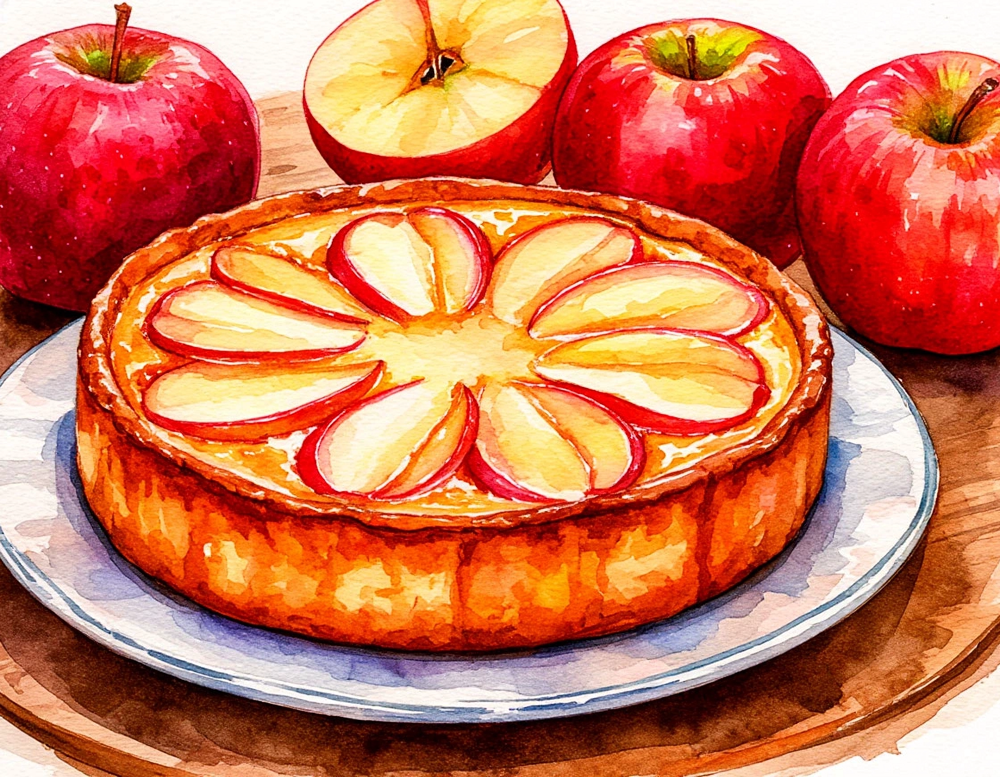

Популярные рецепты
Семейный рецепт

Салат черепаха
Вкусный и сытный салат с курицей, грибами, орехами и черносливом.

Яблочный пирог
Ароматный пирог с корицей и свежими яблоками из сада.
Любимое

Вареники с картошкой
Нежные вареники с картошкой и луком, подаются со сметаной.